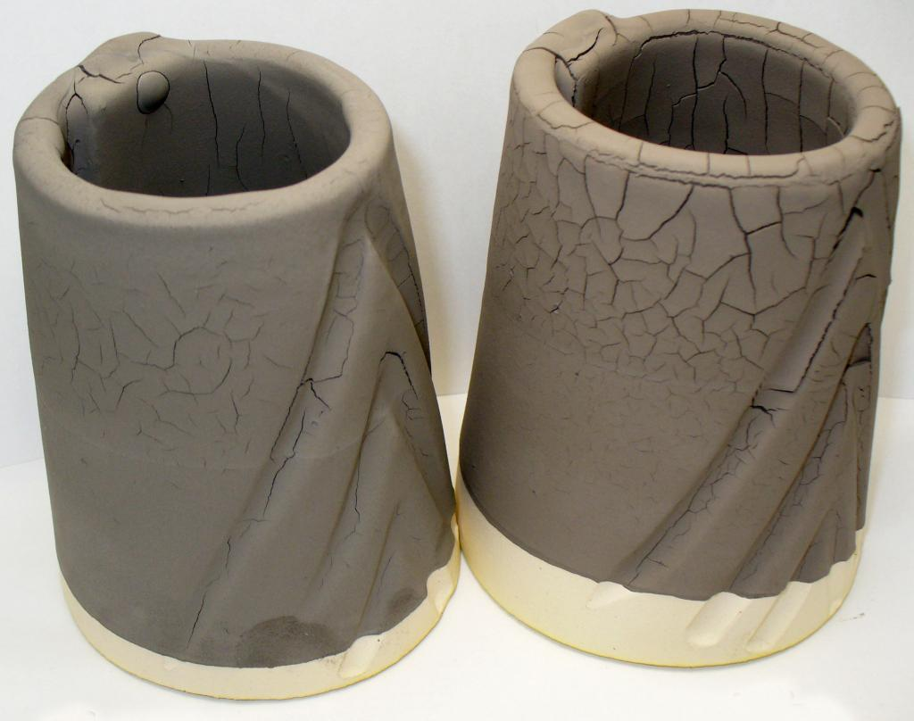
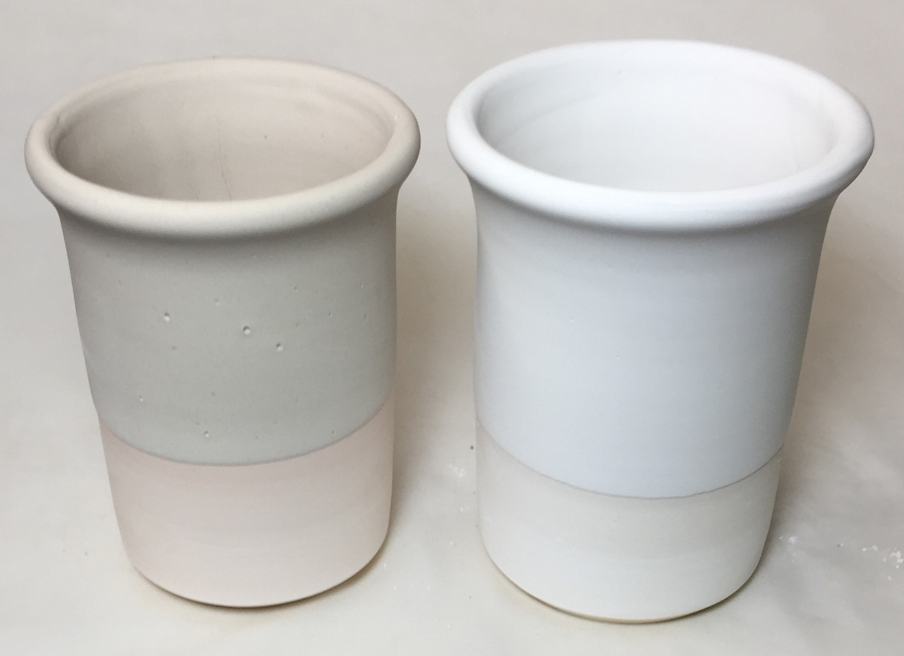
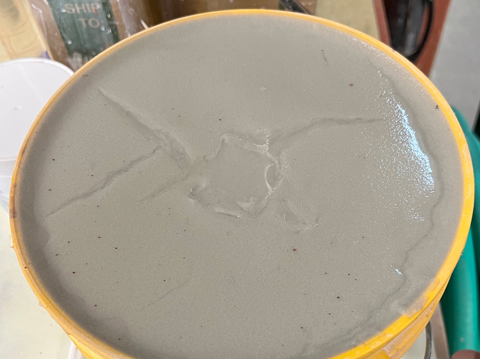

Powdering, Cracking and Settling Glazes
Powdering and dusting glazes are difficult and a dust hazard. Shrinking and cracking glazes fall off and crawl. The cause is the wrong amount or type of clay.
Details
Glazes in traditional ceramics almost always contain a hardener. By far the most common particle binder is simply clay (e.g. kaolin, ball clay, bentonite). When there is enough clay ware can be handled without dusting onto your hands. When there is too much clay, the glaze shrinks excessively during drying and cracks (which can lead to crawling). The clay does not just harden the glaze enough for handling, but it also suspends the slurry in the bucket. So when the percentage of clay is too low settling occurs during storage in the bucket.
It might seem that the chemistry of the glaze could not possibly have anything to do with problems like this. But think again. This is exactly the kind of problem where it really shines. Why? Because many of the solutions involve altering the glaze recipe without changing its overall chemistry. There are lots of examples of doing this in the tutorials on digitalfire.com.
Glaze slurries are suspensions of mineral powders (a bunch of microscopic rocks floating in water). As noted, the thing that makes them float is the same thing that hardens the glaze powder: Clay. Clay particles are thin and flat and very small. One gram of clay has an unbelievably large total surface area compared to other minerals used in ceramics. Clay particles have a curious surface chemistry that produces opposite electrical charges on the faces and edges. This results an affinity for water on the faces, this is what produces plasticity in clay bodies: the water glues together yet lubricates movement of the particle faces one against the other. In high-water systems, like glaze slurries, suspended clay particles hang on to each other directly (edges against faces) and indirectly (faces against faces) using water as the glue. This is often referred to as 'a house-of-cards arrangement' and it can accommodate large amounts of other mineral particles within the matrix and still exhibit the same properties (to a lesser degree of course). Conceptually the other mineral powders are just 'dead microscopic rocks' along for the ride!
As water is removed as a glaze dries the particles move closer and closer together (resulting in shrinkage of the entire matrix). Bonding occurs at points of contact. Simple particle proximity does create somewhat of a rigidity (because of the wide range of sizes, shapes and surface topography and the billions of points-of-contact that result). But more is needed. Clay particles add a new dimension because they are so much smaller and are flat. This multiplies the number of points of contact by orders of magnitude. Large particle clays (although still much smaller than those of other materials present) shrink 5% or less from plastic to dry (really fine particled ones might shrink 25%). This means that a side effect of the presence of the clay is increased shrinkage. But the other dimension is surface chemistry. This results in the migration of some chemical species across the boundary, creating a bonding mechanism. Therefore the dried matrix is actually a bunch of rock particles held together by billions of weakly bonded clay particles.
Now, the question is: What bonds a dry glaze layer to a piece of bisque ware? Well there is no obvious dry adhesion mechanism or boundary chemical reaction. The mechanism of the bond relates to the sticky nature of the wet glaze and the microscopically rough surface of the bisque ware. During hardening the glaze layer loses its wet adhesion and simple mechanical contact is the principle bond mechanism: the layer stays on because all the minute surface cracks and pores give it places to hang on to. As you can imagine, this bond is weak at best.
Since all glazes shrink during drying, it is not clear how the weak bond with the bisque is able to withstand the pulling forces associated with the shrinkage. Some glazes hardly shrink at all because they lack clay content. That is, of course, why they dust off excessively. However glazes that harden properly during drying always crack, you just do not see the cracks. Micro-cracks must develop to relieve the stress. However when there is too much shrinkage they become macro-cracks that propagate. With even more stress the glaze cracks to form 'islands' with curled up edges (like a dried up lake bottom). You can see this effect clearly if you watch a slurry of pure kaolin or ball clay dry on a bisque surface.
As you can see, we want a glaze to have enough clay so that it forms a hard dry layer but not so much that it shrinks excessively and cracks off the bisque. It follows that a powdering glaze needs either more clay (or a finer more plastic clay) whereas a glaze that is shrinking and cracking needs less clay (or less plastic larger-particled clay). Typically pottery glazes need a minimum of 15% kaolin to harden adequately. Ball clays and bentonites can be used, as well as other clay materials, but kaolin usually works the best to gel the slurry (although there are ball clays known to work well with glazes). It might seem that because ball clay is much more plastic than kaolin, you could use a lot less, but in practice, 15% ball is also needed. The same can be said for bentonite, while 5% bentonite might plasticize a body as much as 30% kaolin, this alone is not enough to harden a glaze well, the bulk is needed.
-If your cracking and shrinking glaze employs a relatively plastic kaolin (like North American #6 Tile or Sapphire), try switching to a less plastic one like EPK or Pioneer (this will have almost no effect on glaze chemistry). A similar switch of one ball clay for another can be done (although not as likely to work since pretty well all common ball clays are very plastic). If your glaze is powdering then switch from the less plastic material to a more plastic one. However, powdering is evidence of more than just the selection of the wrong clay, the percentage is not enough. Adding bentonite is common, the small amount needed (often 3-5%) has a minimal impact on fired properties. Remember you can't add bentonite to an existing slurry, it agglomerates into balls that even a propeller mixer won't break up (shake it up with the powder in a new batch to separate the particles).
-Add CMC gum to powdering glazes. In industry gums are standard practice, companies know how to deal with their side effects. But potters should be aware of the impact of using a gum. Like bentonite, it needs to be added during dry mixing. Gum is glue, it is very sticky, it hardens. Using gum is a crow-bar approach, a way of 'gluing' a glaze on the ware. Strangely gum also helps suspend. Gum burns away so it has no effect on glaze chemistry (although the decomposition can produce glaze faults like blistering and pinholing). One serious problem: gummed glazes dry slower and drip-drip-drip after glaze slurry pull-out. This can be compensated in most industrial processes, but can be a total pain in pottery. Experiment with the amount, try 0.5% to start. Add it as a gum solution to the water (deducting the amount of solution need from the water requirement). Commercial paint-on glazes often contain so much gum that the recipe contains zero-water (only gum solution and the dry materials).
-Use kaolin instead of ball clay for cracking glazes (and vice versa for powdering ones). Since kaolin has less silica you may need to use glaze chemistry to figure out how to compensate for the change in alumina and silica. Ball clays are about 60:25% SiO2:Al2O3 and kaolins about 45:37%. Kaolins have double the LOI also. That means that for a ball clay-to-clay substitution to be a chemical equivalent a little more is needed plus some additional silica. But in most cases, where clay percentages are lower than 20% this should be not be an issue.
-Even if the percentage of clay is optimal, glazes can still settle. Check the specific gravity of the slurry (its weight per cc). If it is too low (below 1.4) then it is gelling and there is too much water in the slurry. In pottery it is generally best to have a specific gravity around 1.45 and then fine tune the slurry to have thixotropy (in industry, specific gravities of 1.7 or higher are common, but these are not useful in pottery applications). Perhaps your water supply contains electrolytes that are flocculating the mix, that is, thickening it. Try using distilled water. Also, look out for slightly soluble materials in your glaze, they might be the source of electrolytes. Gerstley borate and nepheline syenite known for gelling slurries. If you have a big container of flocculated glaze there is not much you can do with it except throw it out. You might try adding a small amount of deflocculant like Darvan or Sodium Silicate (e.g. 0.1%) to thin it but then you still have to figure out how to get all the water out and it might be thick again next week!
High feldspar glazes are often lacking in clay. Often a layer of water forms at the surface only a minute or two after stirring (generally not easily seen). Although an adequately thick layer may still build up on the piece during dip, on pull-out the water layer may wash glaze off on the last-to-leave sections (usually the rim). To apply principles mentioned the glaze needs reformulation so the chemistry stays the same but more plastic materials are used to source alumina. Some glazes have 60% feldspar, this is way too much. Using glaze chemistry you reduce the feldspar drastically and source the lost Al2O3 from kaolin, the SiO2 from silica and the alkalies from a frit (e.g. Ferro Frit 3110).
Another note about glaze bonding: If you fire your bisque too high it might not be absorbent enough to build up a good layer of glaze on dipping and still dry out quickly. If a glaze needs to dry over a long period on water-logged ware, then it will usually crack. Likewise, if your ware has very thin walls then there simply will not be enough porosity to pull the water out of the glaze quickly enough (normally a glaze should lose its wet sheen within 30 seconds, many do in less than 10 seconds) to form the mechanical bond with the ware. One solution is to glaze insides and outsides in separate operations (with a drying period between). Or, heat the bisque and dip it hot into the glaze using dipping tongs (of course that is not an option if ware is delicate). Alternatively, you could heat and then spray.
Related Information
Here is what happens when a glaze has too much raw clay

This picture has its own page with more detail, click here to see it.
This is an example of how a glaze that contains too much plastic clay has been applied too thick. It shrinks and cracks during drying and is guaranteed to crawl. This is raw Alberta Slip. To solve this problem you need to tune a mix of raw and roasted clay. Enough raw clay is needed to suspend the slurry and dry it to a hard surface, but enough calcine is needed to keep the shrinkage low enough that this cracking does not happen. Perhaps you have been using a glaze having a high percentage of clay and this does not happen - the reason is likely that the clay is not highly plastic.
Clay in a glaze recipe: Why is it there?
What happens when there is too much?

This picture has its own page with more detail, click here to see it.
If I put this on social, I might get 100 comments on the cause. Most would say it's applied too thick. That is not correct. At the top, it is too thick, but not at the bottom (where it is still cracking). Crawling during firing is almost certain.
Before offering any opinion, one needs to sanity check the recipe. This one, GA6-B, contains a lot of clay. Why do dipping glazes contain clay, usually kaolin, ball clay? To suspend the slurry, slow down drying, gel the slurry to make it thixotropic and harden the layer on drying. But their chemistry is also important, clays supply the all-important Al2O3 and SiO2 to the melt (which would otherwise have to come from feldspar). Certain clays excel at suspending. 15-20% EP kaolin, for example, is all that is needed. It’s not that plastic, but sticky and thixotropic (Grolleg and New Zealand kaolins are similar or even better). 10% of a gelling ball clay might be enough. However, 50% of a silty non-plastic clay might be needed. When the clay has too much influence, glazes shrink too much as they dry and then crack like this. Ones lacking clay (or employing one that is not suitable) have poor application properties (for dipping) and are powdery. This glaze has 80% pure raw Alberta Slip. That is a plastic clay, no wonder this is happening! 50% of it needs to be roasted.
Pure feldspar applied as a glaze: Possible because of the magic of thixotropy.

This picture has its own page with more detail, click here to see it.
These are pure Custer feldspar and Nepheline Syenite. The coverage is perfectly even on both. No drips. Yet no clay is present. The secret? Epsom salts. I slurried the two powders in water until the flow was like heavy cream. I added more water to thin and then started adding the Epsom salts (powdered). After only a pinch or two, they both gelled. Then I added more water and more Epsom salts until they thickened again and gelled even better. The result is a thixotropic slurry. They both applied beautifully to these porcelains. The gelled consistency prevented them from settling in seconds to a hard layer on the bucket bottom. Could you do this with pure silica? Yes! The lesson: If these will suspend by gelling with Epsom salts, then any glaze will. You never need to tolerate settling or uneven coverage for single-layer dip-glazing again!
Will a bentonite slurry addition suspend a glaze?
Not like you might have been told.

This picture has its own page with more detail, click here to see it.
This is 50g of sodium bentonite in 1 gallon of water (~0.5% concentration). Sodium bentonite creates a gel that resists mixing. With a better propeller, faster mixer, hot water, slow addition, etc. we might be able to achieve 1% (or ~100g/gallon). Mud-men (drilling mud mixers) claim 4% is possible using shear pumps, ribbon blenders, or paddle mixers - that seems impossible to me! Why does all this matter? Some say that a gel like this can be added to a settling glaze to fix it. Is that true? Not really. Here is why. Our typical imperial gallon of dipping glaze contains 3500g powder (US gallon 2800g). At least 1% bentonite, or 35g, is needed to make any difference. The more typical 2% would be 70g. If you have a great mixer and can make a slurry having double the concentration of this one, then to deliver the minimum bentonite for a gallon of the glaze would require 1/3 gallon of this! While the added bentonite might help somewhat, the effects of all that extra water will cancel the benefits.
Links
| Materials |
CMC Gum
CMC gum is indispensable for many types of ceramic glazes. It is a glue and is mainly used to slow drying and improve adhesion and dry hardness. |
| Materials |
Peptapon
|
| Materials |
Feldspar
In ceramics, feldspars are used in glazes and clay bodies. They vitrify stonewares and porcelains. They supply KNaO flux to glazes to help them melt. |
| Troubles |
Glaze Slurry is Difficult to Use or Settling
Understanding glaze slurry rheology is the key to solving problems and creating a suspension that does not settle out, applies well, dries crack free. |
| Media |
A Broken Glaze Meets Insight-Live and a Magic Material
Use Insight-Live.com to do major surgery on a feldspar saturated cone 10R glaze recipe with multiple issues: blistering, pinholing, crazing, settling, dusting and possibly leaching! |
| Glossary |
Suspension
In ceramics, glazes are slurries. They consist of water and undissolved powders kept in suspension by clay particles. You have much more control over the properties than you might think. |
| Glossary |
Thixotropy
Thixotropy is a property of ceramic slurries of high water content. Thixotropic suspensions flow when moving but gel after sitting (for a few moments more depending on application). This phenomenon is helpful in getting even, drip-free glaze coverage. |
| Glossary |
Specific gravity
In ceramics, the specific gravity of slurries tells us their water-to-solids ratio. That ratio is a key indicator of performance and enabler of consistency. |
| Glossary |
Ceramic Glaze Defects
Ceramic glaze defects include things like pinholes, blisters, crazing, shivering, leaching, crawling, cutlery marking, clouding and color problems. |
 PayPal | No tracking, No ads, No paywall, No transient content! Just organized, concise information constantly updated and improved. Was this helpful? Consider supporting me. |
| By Tony Hansen Follow me on        |  |
Got a Question?
Buy me a coffee and we can talk 

https://digitalfire.com, All Rights Reserved
Privacy Policy